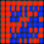

John L. Manferdelli
Office: 711 Soda Hall
Office Phone: 510-643-8691
Mobile Phone: 425-891-7761
Email: JohnManferdelli@hotmail.com
I am co-PI for the Intel Science and Technnology Center for Secure
Computing with David Wagner. The web site is
here. I used to be
a Distinguished Engineer at Microsoft and
an affiliate faculty member in Computer Science at
University of Washington.
I got a Ph.D. at the University of California at
Berkeley in the
Math Department
.
More about me later.
My cryptanalysis class is
here .
Areas of interest: Cryptography, Number Theory, Group Theory, Combinatorics,
Operating Systems, Algebra, Computer Security and Computer Architecture.
